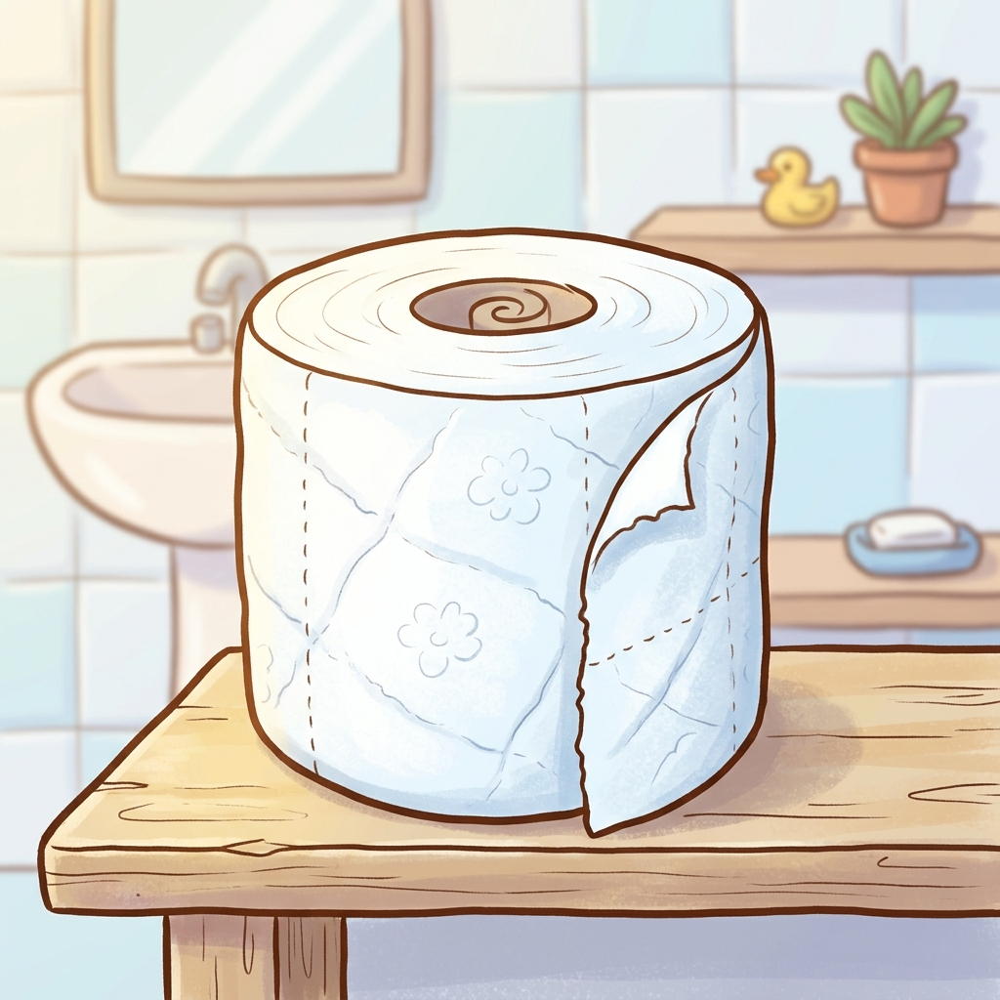
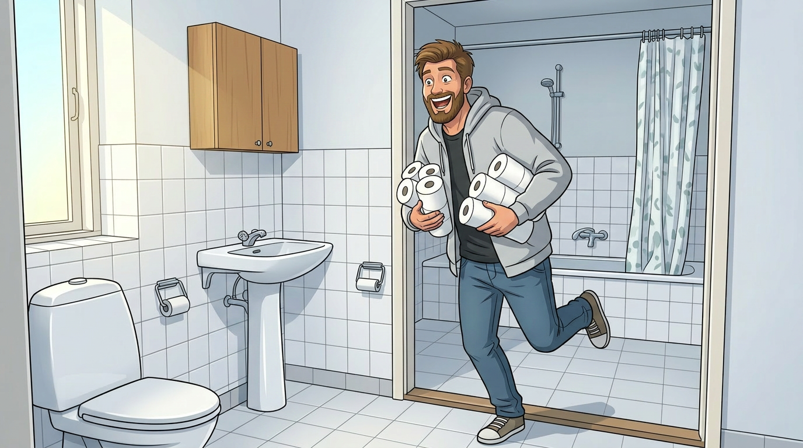
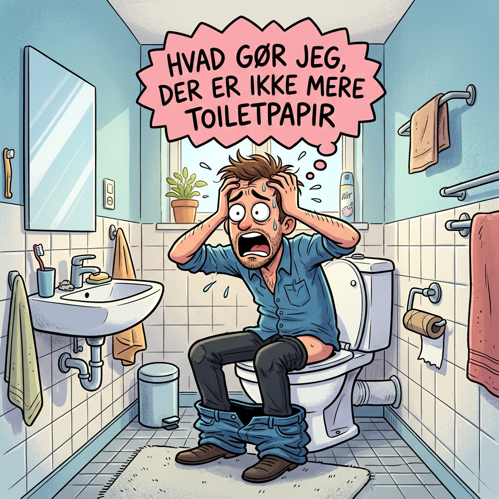

WHAT TO DO
Har du ligesom mange andre stået i en situation hvor du ikke har mere toiletpapir? Jamen så er du det helt rigtige sted. Følg med på siden for guidelines.
Guide til dig
Følg siden for guidelines hvis du er løbet tør for toiletpapir
Har du ligesom mange andre stået i en situation hvor du ikke har mere toiletpapir? Jamen så er du det helt rigtige sted. Følg med på siden for guidelines.
Guide til dig

Kasper havde i årevis kæmpet med det samme tilbagevendende problem — han løb altid tør for toiletpapir på de mest ubelejlige tidspunkter. Midt om natten, inden en vigtig mødedag, eller når gæsterne var på vej.
En tirsdag morgen, efter endnu en katastrofe af den slags, tog han sig endelig beslutningen. Han tilmeldte sig vores faste levering af toiletpapir — og har siden aldrig set sig tilbage.

Lars sad på kummen i flere timer fordi han ikke vidste hvad han skulle gøre
Borgere af Ringsted kommune har sendt foreslag ud omkring nød telefon til toiletpapir. Personlig guide, samt mulighed for runnere